A visual storytelling and UX project for Farmors Food
A real-life project focused on improving the digital presence, visual identity and user experience for Farmors Food.
The goal was to redesign and improve Farmors Food's digital platform by creating a more user-friendly structure and a stronger visual identity that supports the company's brand story and increase the engagement and sales.
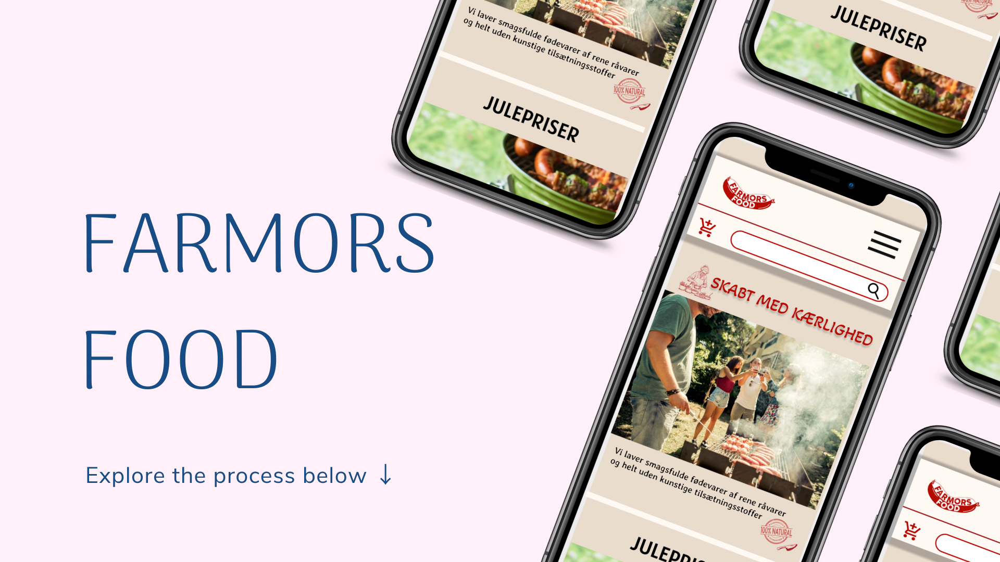
The target group consists of quality-conscious consumers aged 30+ who value transparency, local products and high-quality food. They are willing to pay more for products they trust and feel confident serving to their families.
The project focuses on combining digital storytelling, UX principles and a warm visual identity to create a trustworthy and engaging user experience that reflects the company's values of quality, craftsmanship and authenticity.
Below is a K.W.H.L schedule, which helps to define what needs there is.
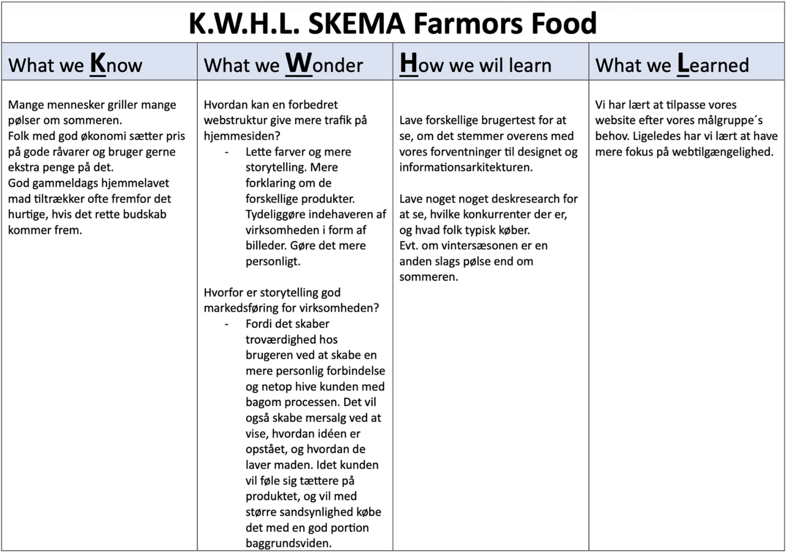
Different moodboards were created to explore various visual directions and to find a style that best reflects Farmors Food's brand and values.
The process included experimenting with colors, imagery and typography to capture a warm, authentic and handcrafted feeling.
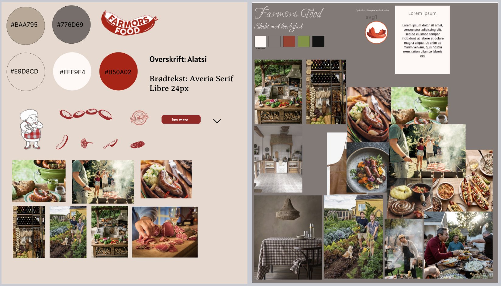
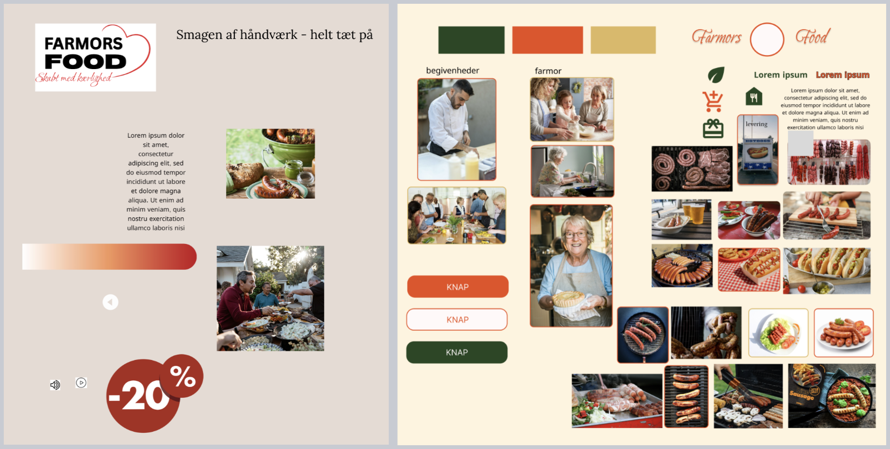
The chosen moodboard shown in the top right corner focuses on warm tones, natural materials and visual storytelling, creating a more inviting and emotional user experience.
Initial sketches were created to explore layout, structure and user flow. The focus was on developing a clear and intuitive navigation that improves the overall user experience.
Different layout solutions were tested to find the most effective way to present content and guide the user through the platform.
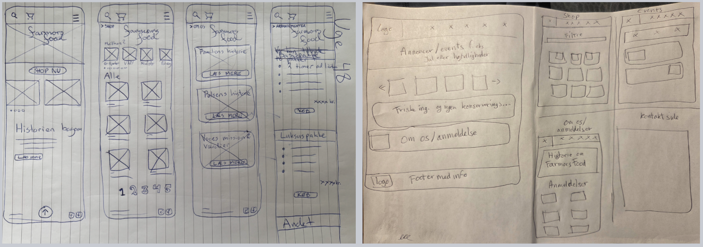
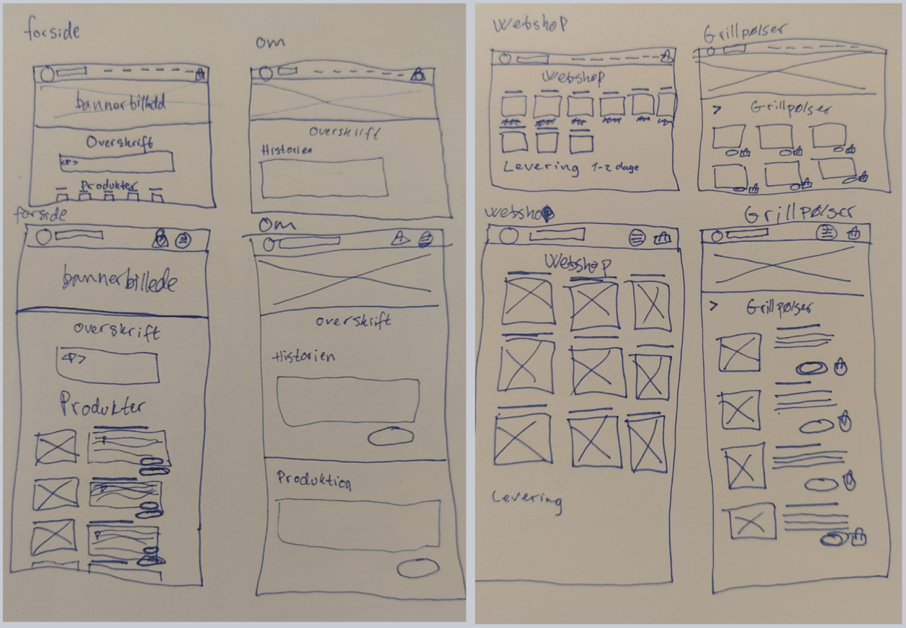
Two different prototypes were developed and tested to explore variations in color and layout helping to identify the most effective design solution.
The version on the right was selected for its clearer structure and stronger visual identity, as well as the client's preference to retain the original logo.
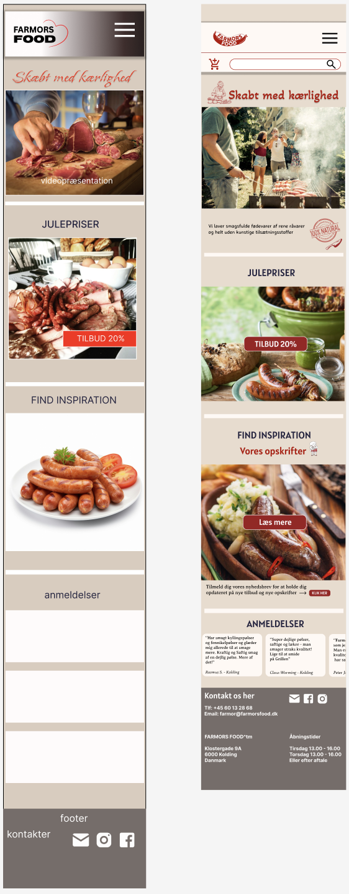
We used the Gangster Test and the Desirability Test to evaluate the prototype and identify areas for improvement in both the UX and UI.
Final mobile and desktop prototypes were developed to ensure a consistent and user-friendly experience across devices.
Mobile version prototype
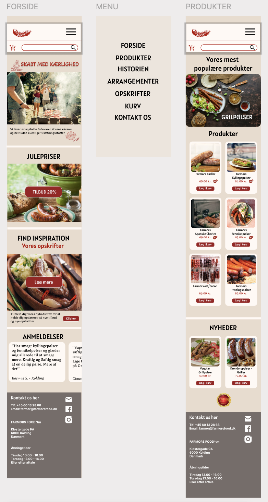
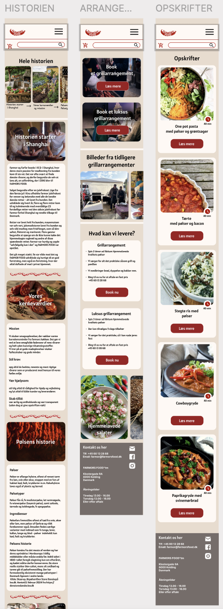
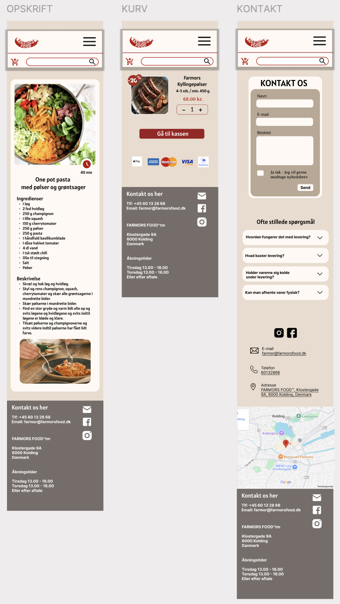
Desktop version prototype
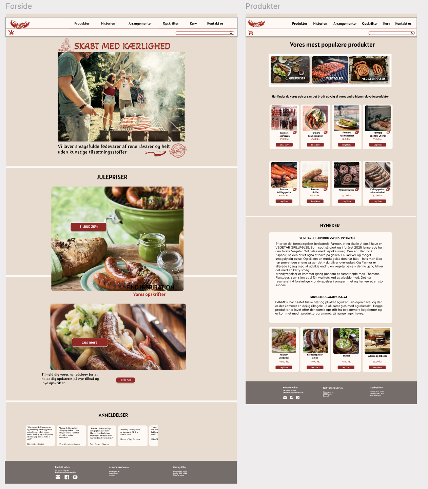
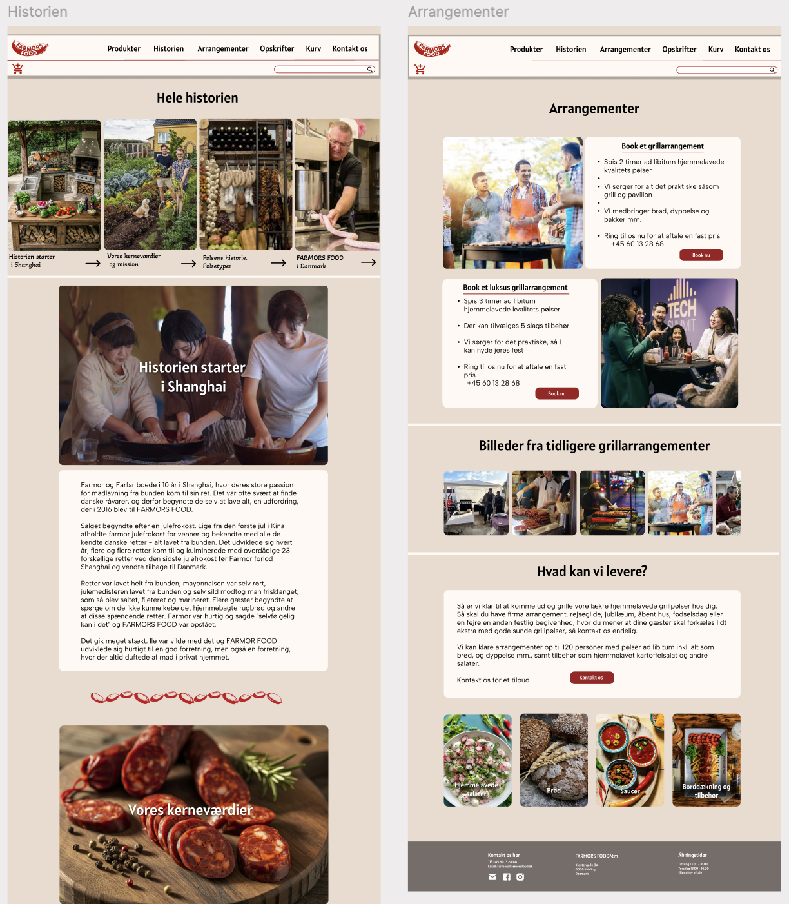
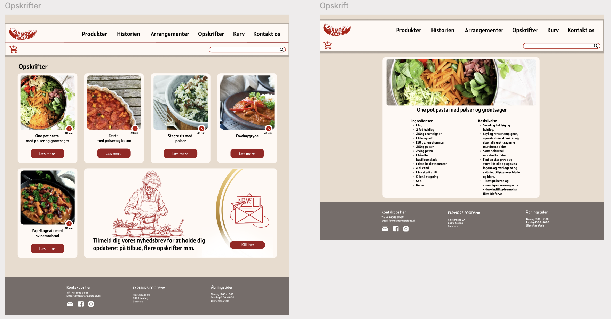
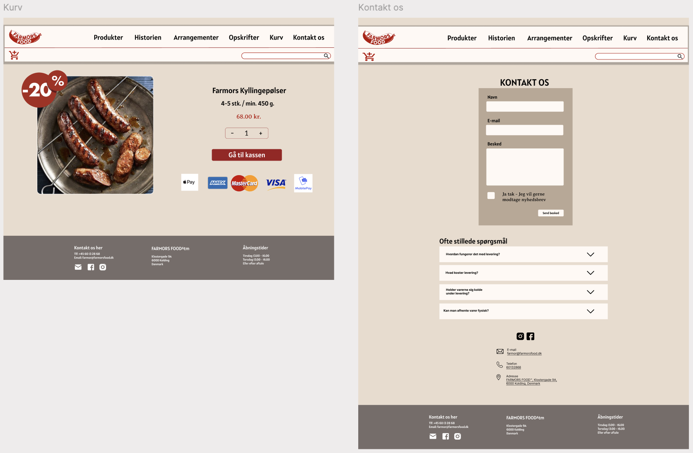
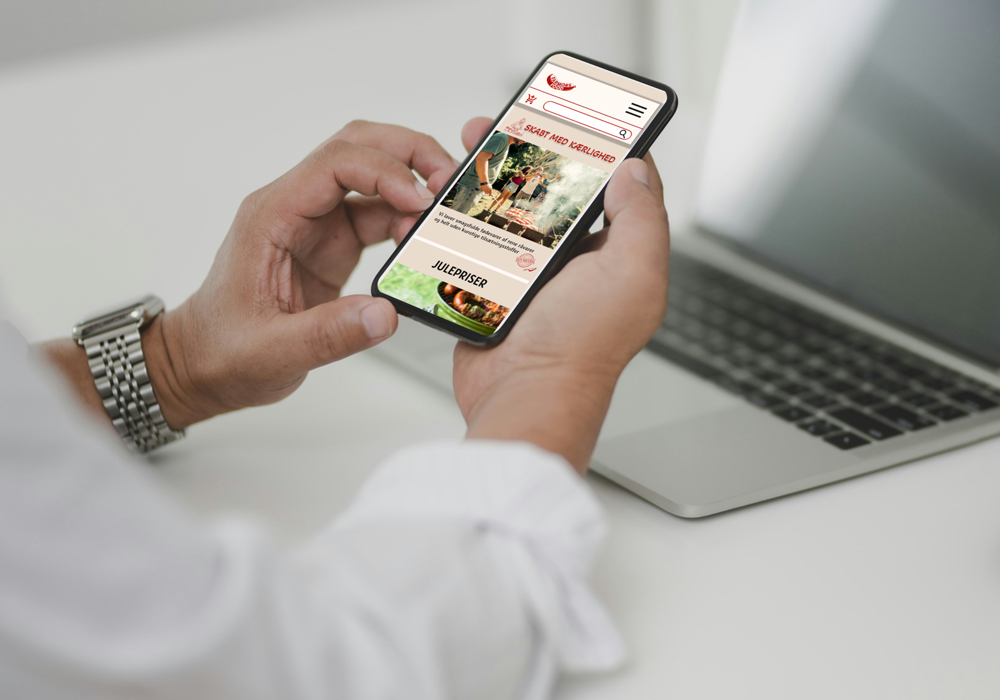
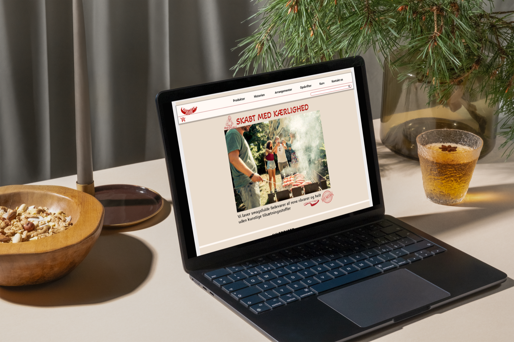
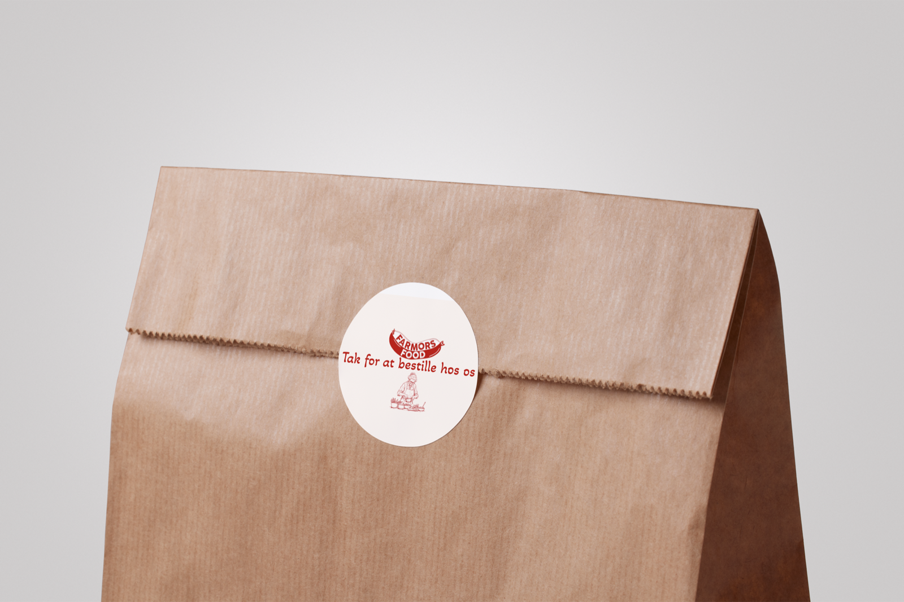
Overall, the project results in a cohesive and user-friendly solution that strengthens the brand identity and creates a more engaging and trustworthy digital experience.